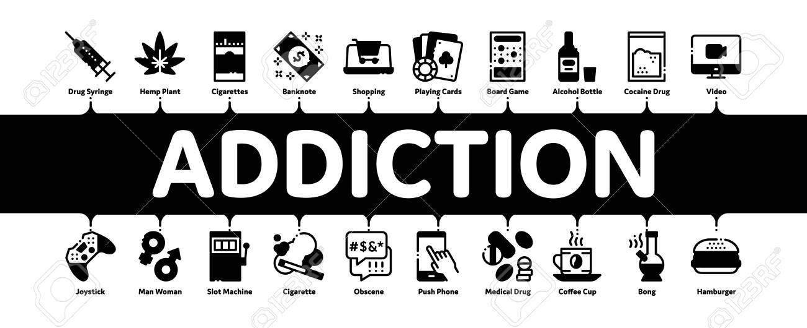

The physical effect of the drug are..

1) Sedation or Relaxation: Some drugs can induce a sense of calmness, relaxation, or
drowsiness.
2) Stimulation: Other drugs can increase alertness, energy, and wakefulness.
3) Pain Relief: Certain drugs are used to alleviate pain, ranging from mild discomfort to
severe chronic pain.
4) Changes in Sensation: Some drugs, especially hallucinogens, can alter sensory perception
, leading to visual or auditory hallucinations.
5) Nausea and Vomiting: Some drugs can cause gastrointestinal distress and lead to nausea
and vomiting.
6) Heart Rate and Blood Pressure Changes: Drugs can impact heart rate and blood pressure,
either increasing or decreasing these vital signs.
7) Respiratory Depression: Opioids and certain depressant drugs can slow down breathing,
potentially leading to respiratory distress.
8) Dilated or Constricted Pupils: Drugs can affect the size of pupils, which can be
indicative of the type of drug used.
9) Tremors and Muscle Twitches: Some drugs can cause involuntary muscle movements or tremors.
back